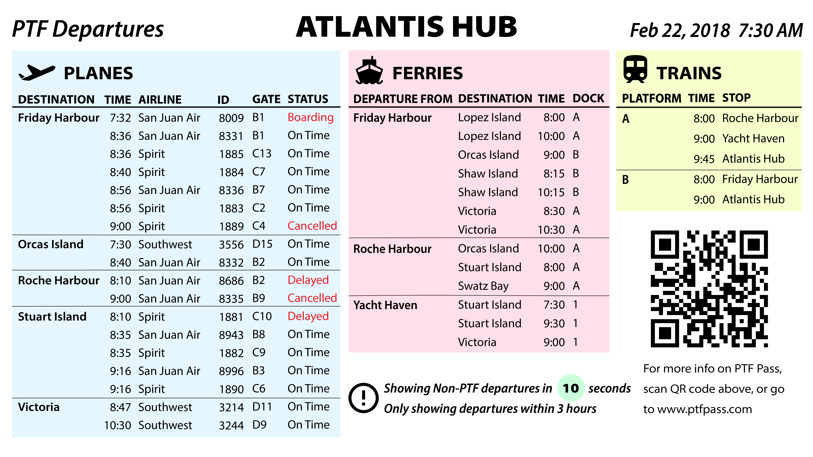
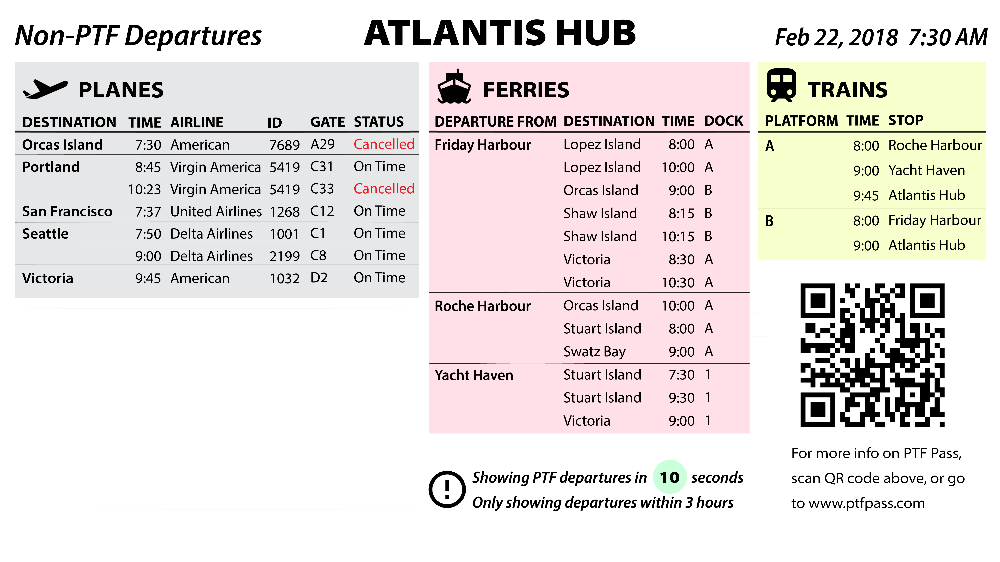

I might not be the best visual designer, but I'm learning! My compositions from coursework can be found in my Medium blog.
Atlantis Hub Screen Design
 Resources: Video demo.
Overview: This project is about data-driven environmental display. Given large amounts of data, we are supposed to design the screens for Atlantis Hub to best display the given information.